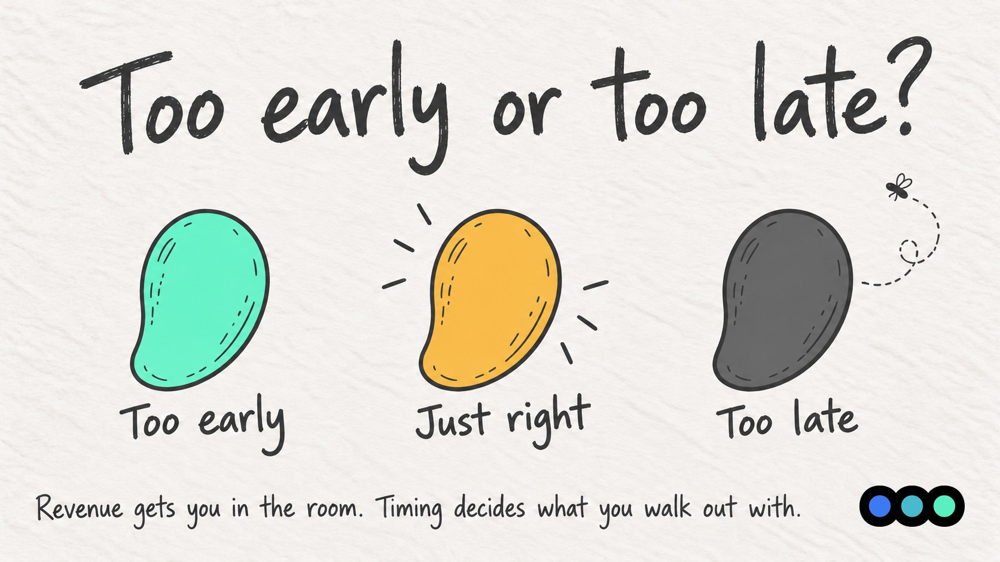
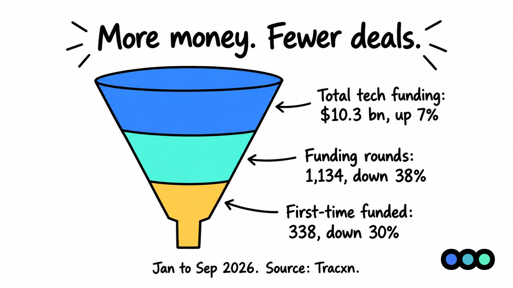
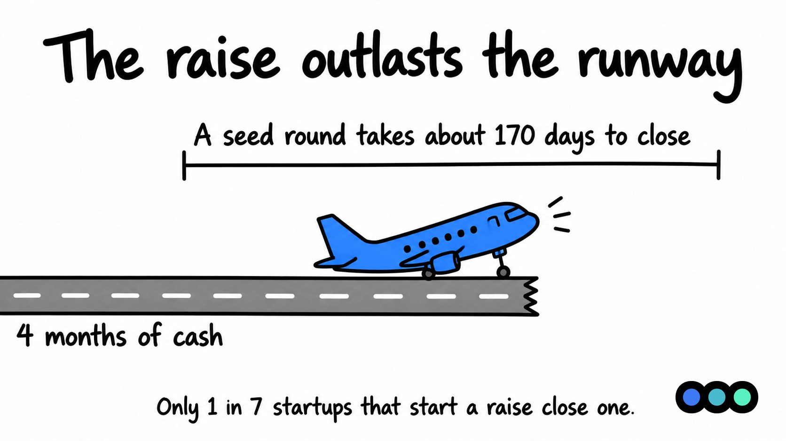
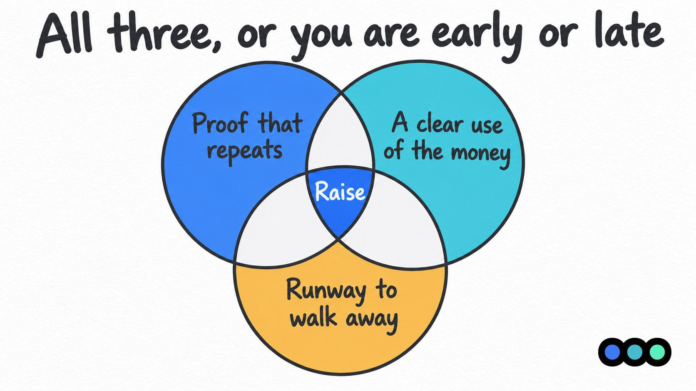
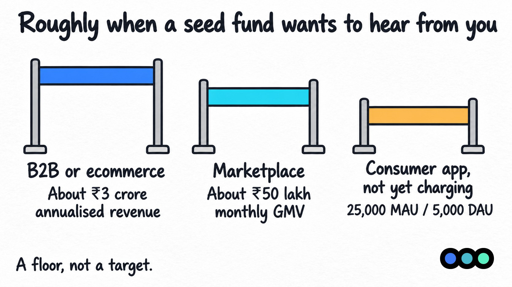

Prologue Blog · Founder Insights
Too Early or Too Late?
Why revenue alone isn't the signal for Indian founders, and the three things that are

Most founders think revenue is the signal to raise. It isn't. Revenue gets you into the room, but timing decides what you walk out with.
India now has over 2.23 lakh DPIIT-recognised startups, with more than 55,200 added in FY26 alone. More of them than ever are chasing the same pool of early capital. And in 2026 that pool got smaller at the top. Seed funding in India fell 37% to $698 million in the first nine months of the year, and the number of first-time funded companies dropped 30% to 338. The money is going to fewer founders, who show up with proof, a plan for the money, and enough runway to say no.
The market has changed
Investors are writing fewer cheques, but bigger ones, to companies that have already proved something. Tracxn's 9M 2026 report shows the split clearly:
| Metric | Value | Change YoY |
|---|---|---|
| Total tech funding | $10.3 bn | Up 7% |
| Funding rounds | 1,134 | Down 38% |
| Early-stage funding | $4.2 bn | Up 27% |
| Seed funding | $698 mn | Down 37% |
| First-time funded companies | 338 | Down 30% |

More money, fewer deals. The top of the funnel is where it got tight. Inc42's H1 2026 report found a similar picture: $5.2 billion raised across 501 deals, with investors still wary because many startups were not fundraising-ready.
The road past seed is getting longer too. Per Seafund's 2026 data, the median gap between a seed close and a Series A close in India is now about 20 months, and seed to Series A conversion has dropped from roughly 13% to 5%.
This is not a 2026 problem alone. Venture Intelligence tracked over 2,500 Indian startups that raised seed between 2015 and 2022. Only 29% went on to raise a Series A.
The takeaway: when you raise, and what you have in hand when you do, now decides whether you raise at all.
Mistake 1: Raising too early
The first few lakhs of revenue feel like proof. Often they are not. In India, early sales usually come from the founder's network, a paid pilot with a large corporate, or one enterprise customer who signed once. A PoC with a big-name brand looks great on a slide, but it is not a contract.
Investors have seen this many times. Revenue from personal networks and one-off deals reads as unscalable. Without repeat customers and more than one way to find new ones, the growth story does not hold up.
Raising on thin proof costs you in three ways:
- Lower valuation. You give away more of the company for less money.
- Burnt bridges. An investor who passes now is harder to bring back in six months.
- Wrong benchmark. Your next round is judged on what you promised in this one.
Mistake 2: Raising too late
The opposite mistake is quieter and more dangerous. The business is doing well, the founder is busy selling, and the raise keeps getting pushed. Then the bank balance shows four months of runway.
Rounds take longer than founders expect, and Indian founders rarely raise in one clean round. In a Peak XV survey, 39% of respondents said founders here go through a seed and two bridge rounds before reaching Series A. Global data from Metal puts the median seed round at about 170 days to close, and only 1 in 7 startups that start a raise actually close one.

Now do the maths. Start with four months of cash, and the process alone can outlast it. Add slow-paying enterprise or government customers, common for Indian B2B startups, and cash runs out faster than the P&L suggests. Investors notice when you need the money more than they need the deal. That is when terms get worse and founders accept things they would normally reject.
The three signals that say it's time
The right moment is when three things line up at once. Any two without the third, and you are either early or late.

1. Proof that repeats
Not one big order, but a pattern. Customers who come back, revenue that grows month on month instead of in lumps, and a clear answer to why people stay. Investors are not buying your past revenue. They are buying evidence that it will keep happening.
2. A clear use of the money
Be able to say what the cheque buys in one line. "₹4 crore takes us from one city to three and adds a six-person sales team" is a plan. "Growth and hiring" is not. If you cannot name the milestone the money unlocks, wait until you can.
3. Runway to walk away
Start the process with at least 9 to 12 months of cash in the bank. That covers a typical 5 to 6 month raise, plus a buffer if it slips. If you sell B2B in India, count runway on cash collected, not revenue booked. Runway is what lets you say no to a bad term sheet.
One more rule: raise right after a milestone, not right before it. Close the big customer, cross the revenue mark, clear the pilot. Then raise on the result, not the promise.
What "ready" looks like in numbers
There is no single bar, but a few Indian funds publish rough thresholds. Blume Ventures, for example, says this is roughly when it wants to hear from founders at seed:
| Business model | The one metric that matters | Rough seed threshold |
|---|---|---|
| B2B or ecommerce | Annualised revenue | About ₹3 crore |
| Marketplace | Monthly GMV | About ₹50 lakh |
| Consumer app, not yet charging | Active users | 25,000 MAU / 5,000 DAU |

Treat these as a floor, not a target. And pick the metric your business actually runs on. A marketplace pitching revenue, or a SaaS company pitching downloads, signals that the founder does not know what drives the business.
Beyond the headline number, investors now go a level deeper. Expect questions on gross margin, contribution margin, CAC, lifetime value, burn, runway, receivables, retention and working capital. If any of these are fuzzy, fix them before the first meeting, not during diligence.
When not to raise at all
Sometimes the honest answer is: not yet, or not at all.
- You are profitable and growing on your own cash. Outside money may only buy dilution. Raise when capital speeds you up, not just because you can.
- You cannot name what the money unlocks. Capital without a clear milestone usually gets spent on things that do not move the next round.
- Your metrics are flat between rounds. If nothing has moved since your last raise, a new round will not be priced up, however good the story sounds.
- A non-dilutive route fits better. The Startup India Seed Fund Scheme, state programmes like Uttar Pradesh's Startup Policy 2026 (seed support up to ₹15 lakh, and up to ₹30 lakh for deep-tech), revenue-based financing or working capital lines can fund a specific need without giving up equity.
The bottom line
Revenue opens the door. It does not decide the outcome. In India's 2026 market, where seed cheques are fewer and harder to win, the founders who close are the ones who time it right: proof that repeats, a clear plan for the money, and enough runway to walk away from a bad deal.
The best time to start preparing is before you need to. The deck, the model and the story take longer to get right than most founders expect, and investors can tell when they were put together in a rush.
This post is general information, not financial, legal or tax advice. Funding figures are as reported by the sources listed below and change quickly. Check your own position with your CA or company secretary before you act on it.
Sources
- Tracxn India Tech 9M 2026 Report, via YourStory
- Tracxn India Tech 9M 2026 Report, via MediaBrief
- Inc42: Indian startup funding slips 9% to $5.2 Bn in H1 2026
- India CSR: Why most startups are not fundraising-ready
- Backrr: What Indian investors expect at pre-seed, seed and Series A (Seafund 2026 data)
- Outlook Startup: Only 29% of startups secured a Series A, Venture Intelligence
- Peak XV: Introducing Surge (founder survey)
- Metal: Round success metrics
- eChai Ventures: Seed traction benchmarks, citing Blume Ventures
- Drishti IAS: Uttar Pradesh Startup Policy 2026
Not sure if now is the right time?
Timing is the question founders get wrong most often, and it is rarely answered by the revenue line alone. It comes down to what repeats, what the money unlocks, and how long you can afford to say no.
Prologue works with founders before they raise, on the pitch deck, the financial model and the story investors will test. If you are weighing up a round, talk to us.

About Karan Shah
Karan Shah is a Deal Manager at Earlyseed Ventures, helping back India's next wave of founders across defence, deeptech, SaaS, MedTech and consumer brands. Karan brings about six years in venture capital and deal-making, with a knack for spotting promising startups early and getting deals over the line, from first pitch to final signature.